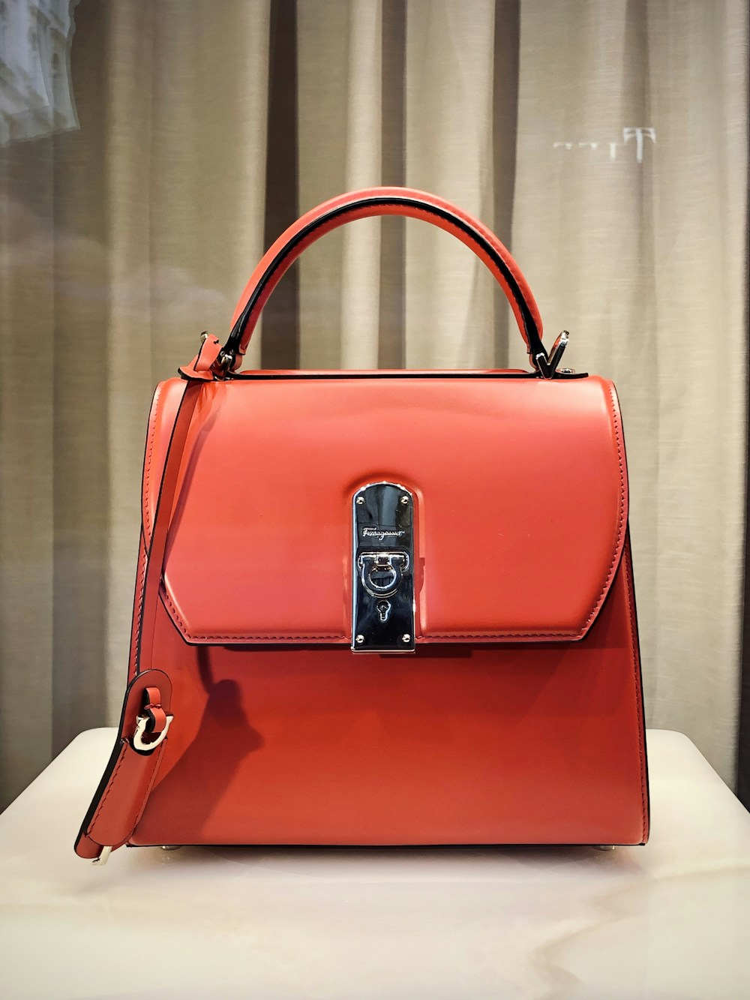

Creating a luxury evening minaudière sculpted from solid natural **Baltic Amber** is one of the most demanding disciplines in all of haute joaillerie and luxury leathercraft. Unlike quartz, sapphire, or diamond—which can withstand high mechanical heat during faceting—amber is an organic fossilized resin with a low melting point (250–300°C) and extreme sensitivity to localized thermal stress.
A fraction of a second of excess tool friction can cause an irreplaceable 40-million-year-old amber nodule to craze, cloud, or fracture internally. At Amber Purse Fox, our master lapidaries utilize specialized Low-RPM Water-Cooled Diamond Lapidary Wheels and Traditional Wooden Spindles. In this masterclass, we explore the intricate lapidary techniques required to sculpt, facet, and polish rough Baltic amber into magnificent evening clutches.
1. Selecting the Rough Amber Nodule: Density, Inclusions, and Mass
The meticulous grading protocol for minaudière panels:
- Mass and Monolithic Volume: Only one in ten thousand raw Baltic amber nodules is large enough (exceeding 250 grams) and structurally sound enough to be hollowed into a single-piece clutch shell.
- Internal Stress Mapping: Using cross-polarized light tables, lapidaries inspect the nodule's interior for internal stress fractures and prehistoric air bubble pockets before cutting.
- Cortex Preservation vs. Removal: Deciding whether to preserve the weathered, textured natural amber crust (*cortex*) as an organic design accent or slice through it to reveal liquid honey clarity.
“Carving amber is a delicate dialogue with deep time. You do not force your will upon the stone; you gently reveal the golden light that has waited forty million years to shine.”
2. The Five Lapidary Stages of Amber Minaudière Sculpture
How raw sea-tumbled amber transforms into haute couture:
- Stage 1: Diamond Wire Slicing under Continuous Water Jet: Slow-speed diamond wire saws slice the raw nodule into precision architectural slabs under continuous cool mineral oil lubrication.
- Stage 2: Ergonomic Shell Hollowing: Diamond burrs carved inside precision rotary handpieces hollow out the interior chamber, maintaining a uniform 4.0mm wall thickness for strength and lightness.
- Stage 3: Rose and Brilliant Faceting: Placing the outer surface against 1200-grit diamond laps to cut geometric facets that catch and bounce evening candlelight.
- Stage 4: Progressive Silicon Carbide Sanding: Hand-sanding through 2000, 3000, and 5000-grit wet sandpaper to eliminate all microscopic tool marks.
- Stage 5: Cerium Oxide and Felt Wheel Glazing: High-speed felt bobs charged with pure cerium oxide paste buff the surface into a mirror-smooth, liquid glass optical brilliance.
3. Thermal Shock Prevention and Vibration Dampening
The extreme care required during gemstone cutting:
Amber expands rapidly when heated. Our lapidary benches utilize constant ambient temperature controls (20°C) and water-dampened rubber chucks to eliminate motor vibrations that could shatter delicate amber edges.
4. Lapidary Tooling & Gemstone Finishing Comparison Matrix
| Cutting & Polishing Technique | Thermal Friction Control | Optical Clarity Yield | Structural Integrity Risk |
|---|---|---|---|
| Water-Cooled Diamond Lap + Felt Polishing | 100% Cool (Sub-25°C Continuous Flow) | ★★★★★ (Flawless Mirror Optical Glass) | Zero Thermal Micro-Fracturing |
| Standard High-Speed Dry Rotary Wheel | Frictional Heat Exceeds 180°C | ★★☆☆☆ (Cloudy, Scorched Resin Surface) | Catastrophic Thermal Cracking |
| Chemical Dip Solvent Glossing | Chemical Etching Reaction | ★☆☆☆☆ (Sticky, Uneven Synthetic Film) | Surface Dissolution & Softening |
5. Custom Solid Brass Chassis and 24K Gold-Plated Bezels
Once sculpted, the amber panels are set into precision CNC-machined solid brass frames finished with 5-micron 24K yellow gold plating. Hand-turned brass hinges provide a reassuring, silky-smooth click when opening.
6. Integrating Hand-Stitched Leather Gussets
Our master leather tailors saddle-stitch butter-soft Tuscan lambskin leather gussets into the brass chassis, allowing the amber minaudière to expand effortlessly to hold an evening phone, lipstick, and keys.
7. Sculptural Ergonomics for the Palm
Every minaudière is shaped to rest harmoniously in the curvature of the human hand, distributing weight evenly and offering an irresistible sensory touch throughout evening galas.
8. The Pinnacle of Wearable Gemological Art
An amber evening minaudière from Amber Purse Fox represents the ultimate union of ancient natural wonder and master artisan skill, gracing red carpets with timeless sophistication.
9. Amber Inlay Intarsia and Marquetry Mosaics
For geometric clutches, artisans execute miniature amber intarsia: cutting contrasting tiles of butterscotch, cognac, and cherry amber to within 0.05mm tolerances, assembling seamless mosaic patterns.
10. Magnetic Tension Latches and Concealed Closures
Our engineering team integrates rare-earth neodymium magnets concealed within the amber rim, ensuring effortless one-handed closure that locks securely without distracting visible latches.
11. An Eternal Covenant of Lapidary Excellence
At Amber Purse Fox, our devotion to precision lapidary craft ensures that every amber gemstone clutch is sculpted with sublime artistry and enduring structural integrity.
12. Amber Inlay Intarsia and Marquetry Mosaics
For geometric clutches, artisans execute miniature amber intarsia: cutting contrasting tiles of butterscotch, cognac, and cherry amber to within 0.05mm tolerances, assembling seamless mosaic patterns.
13. Magnetic Tension Latches and Concealed Closures
Our engineering team integrates rare-earth neodymium magnets concealed within the amber rim, ensuring effortless one-handed closure that locks securely without distracting visible latches.
14. The Sublime Wonder of Hand-Faceted Baltic Gemstones
Gazing into the warm depths of a faceted amber minaudière reveals a mesmerizing interplay of prehistoric light, golden transparency, and velvety botanical warmth found in no other luxury creation.
15. The Master Blueprint for Amber Lapidary Sculpture
At Amber Purse Fox, our mastery of water-cooled gemstone cutting and diamond polishing honors forty million years of Earth history, delivering wearable art of extraordinary clarity and sculptural power.
16. Custom Ergonomic Handbag Grooves and Palm Recesses
Each minaudière shell features subtle hand-carved longitudinal finger grooves along its lower edge, providing a secure, comfortable grip that feels like an organic extension of the patron's hand.
17. An Eternal Covenant of Haute Lapidary Art
Sculpting solid fossilized amber into refined evening clutches represents the pinnacle of wearable jewelry engineering, uniting geological wonder with master craftsman virtuosity.
18. Laser Alignment and Optical Symmetry Verification
Before setting the faceted amber panels into their solid brass chassis, lapidaries verify facet angle symmetry using helium-neon laser alignment grids, ensuring perfect light reflection across every geometric plane.
19. Hand-Turned Precision Brass Hardware and Tension Hinges
Each hinge pin is turned on a jeweler's watchmaker lathe from solid naval brass rod, delivering smooth, frictionless opening motion that never sags or loosens over decades of gala use.
20. The Eternal Triumph of Handcrafted Lapidary Sculpture
Transforming rough Baltic amber into a luminous, wearable evening clutch is a sublime testament to human patience and artistic virtuosity, elevating natural geological wonders into the highest sphere of luxury fashion.
21. The Golden Synthesis of Lapidary and Leather Mastery
Uniting hand-carved Baltic amber gemstones with traditional French saddle-stitched bridle leather represents the ultimate synthesis of haute joaillerie and luxury maroquinerie.
22. An Everlasting Standard of Haute Handbag Sculpture
At Amber Purse Fox, every evening minaudière sculpted in our atelier is a timeless celebration of prehistoric nature and master artisan devotion, destined to shine across generations of gala luxury.
Frequently Asked Questions on Amber Handbag Carving

Valeria Korhonen
Master Lapidary Director at Amber Purse Fox. Valeria spent fifteen years carving rare amber specimens in Gdansk before establishing our Manhattan lapidary studio.